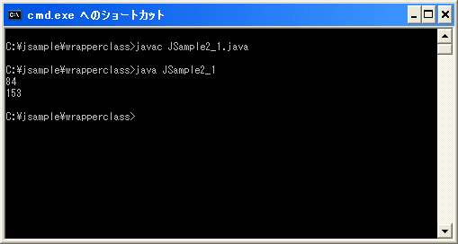

オブジェクトの作成と値の設定
基本データ型の値に対して様々な操作を行うには、基本データ型の値を持つラッパークラスのオブジェクトを作成します。そして作成したオブジェクトに対してラッパークラスで用意された様々なメソッドを用いていきます。
例としてint型の値を持つIntegerクラスのオブジェクトを作成します。new演算子を使い次のように記述します。(new演算子の簡単な説明は「標準クラスの使い方」を参照して下さい。詳しくはまた改めて解説します)。
new Integer(int型の値)
引数にはint型の値を指定します。例えば次のように記述します。
int i = 84; Integer oi = new Integer(i);
他のラッパラークラスも同じように基本データ型を持つオブジェクトを作成することができます。
byte b = 12; Byte ob = new Byte(b); short s = 32; Short os = new Short(s); long l = 153L; Long ol = new Long(l); float f = 3.24F; Float of = new Float(f); double d = 7.6; Double od = new Double(d);
オブジェクトを作成するには他にもvalueOfメソッドを使用する方法などがありますがここでは省略します。
オートボクシング
J2SE5.0以降ではオートボクシング(Autoboxing)と言う機能が提供されるようになりました。簡単に言えば本来ラッパークラスのオブジェクトを記述すべきところにラッパークラスに対応した基本データ型の値を記述すると、自動で変換してくれるというものです。
言葉で書くと分かりにくいのですが、次のような記述を行うことができます。
int i = 84; Integer oi = i;
これは次のように記述した場合と同じです。
int i = 84; Integer oi = new Integer(i);
オブジェクトを作成せずに単に基本データ型の値を記述するだけでいいのでプログラムを簡潔に記述することができます。ただ自動的に変換されているということは覚えておいて下さい。
サンプル
では簡単な例で試しておきます。
class JSample2_1{
public static void main(String args[]){
int i = 84;
Integer oi = new Integer(i);
System.out.println(oi.intValue());
/* オートボクシングを利用 */
Long ol = 153L;
System.out.println(ol.longValue());
}
}
コンパイル後に実行すると次のように表示されます。

このサンプルではラッパークラスの値を取得するためにintValueメソッドとlongValueメソッドを使っています。このメソッドの説明は次のページで行います。
( Written by Tatsuo Ikura )

著者 / TATSUO IKURA
初心者～中級者の方を対象としたプログラミング方法や開発環境の構築の解説を行うサイトの運営を行っています。